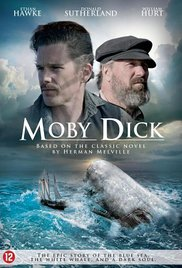

Not very far distant Flask's boat was also lying breathlessly still; its commander recklessly standing upon the top of the loggerhead, a stout sort of post rooted in the keel, and rising some two feet above the level of the stern platform. It is used for catching turns with the whale line. Its top is not more spacious than the palm of a man's hand, and standing upon such a base as that, Flask seemed perched at the mast-head of some ship which had sunk to all but her trucks. But little King-Post was small and short, and at the same time little King-Post was full of a large and tall ambition, so that this loggerhead stand-point of his did by no means satisfy King-Post.
"I can't see three seas off; tip us up an oar there, and let me on to that."
Upon this, Daggoo, with either hand upon the gunwale to steady his way, swiftly slid aft, and then erecting himself volunteered his lofty shoulders for a pedestal.
